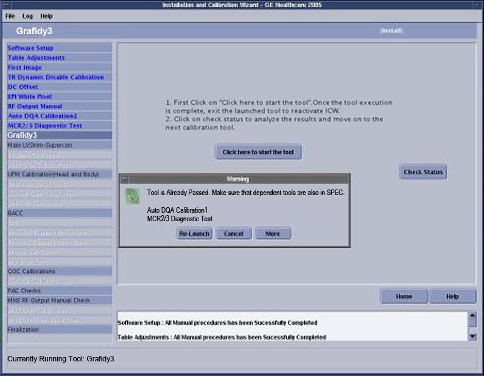

GE Exclusive Use Only
Direction 5440000, Rev# 5
Signa HDxt Service Methods
Module Version 9.0, Version Date 11/12/10
GE Exclusive Use Only |
| Required Persons | Preliminary Reqs | Procedure | Finalization |
|---|---|---|---|
| 1 | Not Applicable | Depends on the calibrations required | Not Applicable |
The Installation and Calibration Wizard (ICW) is designed to guide the user through the proper sequence of installation workflow. The tables below provide an overview of the calibrations to expect with various upgrade scenarios.
Table 1: Upgrading from 9.x, 3T/94 to 14.x or 15.x HD LPCA
| Software Load |
| Table Adjustments |
| First Images |
| TR Dynamic Disable Calibration |
| DC Offsets Adjustment |
| EPI White Pixel Test |
| RF Output - Head and Body (3T/94 Only) |
| DQA-II |
| MCR 2 |
| Grafidy3 |
| DQA-II |
| LVShim - ShimtoSpec, Supercon |
| LVShim - Customer Acceptance, GradShim |
| UPM Calibration - Head and Body |
| UPM Functional Check |
| System Gain Calibration - Head and Body |
| System Performance Test - Full Pass |
| Bandpass Assymetry Correction Test |
| Echo Planner Test - Full Pass |
| Probe/P Tune - Purchased Option |
| Probe/S Tune - Purchased Option |
| Probe SNR Check - Purchased Option |
| Install in Spec Key Generation |
| Z2 Eddy Current Compensation (3T/94 Only) |
| HO Shim Reference Map (3.0T Standard, 1.5T Optional) |
| HO Shim Functional Check (3.0T Standard, 1.5T Optional) |
| GOC Calibrations |
| Surface Coil SNR Tests |
| PAC Checks |
| MNS RF Output Cal Manual Check* |
| MNS UPM Cal* |
| MNS UPM Functional Check* |
| Finalization |
| NOTE: | *Should only display if the Option Key for the item is installed, either as part of this upgrade or prior to the upgrade. |
Table 2: Upgrading from 11.x 1.5T to 14.x or 15.x HD LPCA
| Software Load |
| First Images |
| TR Dynamic Disable Calibration |
| DC Offsets Adjustment |
| EPI White Pixel Test |
| RF Output - Head and Body (3T/94 Only) |
| DQA-II |
| MCR 2 |
| Grafidy3 |
| DQA-II |
| LVShim - Customer Acceptance, GradShim |
| System Gain Calibration - Head and Body |
| System Performance Test - Full Pass |
| Bandpass Assymetry Correction Test |
| Echo Planner Test - Full Pass |
| Probe/P Tune - Purchased Option |
| Probe/S Tune - Purchased Option |
| Probe SNR Check - Purchased Option |
| Install in Spec Key Generation |
| GOC Calibrations |
| MCQA Tool for Surface Coil |
| PAC Checks |
| MNS RF Output Cal Manual Check* |
| MNS UPM Cal* |
| MNS UPM Functional Check* |
| Finalization |
| NOTE: | *Should only display if the Option Key for the item is installed, either as part of this upgrade or prior to the upgrade. |
Table 3: Upgrading from G3 or E2 to 14.x or 15.x HD LPCA
| Software Load |
| First Images |
| TR Dynamic Disable Calibration |
| DC Offsets Adjustment |
| EPI White Pixel Test |
| DQA-II |
| MCR 2 |
| Grafidy3 |
| DQA-II |
| LVShim - Customer Acceptance, GradShim |
| System Gain Calibration - Head and Body |
| System Performance Test - Full Pass |
| Bandpass Assymetry Correction Test |
| Echo Planner Test - Full Pass |
| Probe/P Tune - Purchased Option |
| Probe/S Tune - Purchased Option |
| Probe SNR Check - Purchased Option |
| Install in Spec Key Generation |
| Z2 Eddy Current Compensation (3T/94 Only) |
| GOC Calibrations |
| MCQA Tool for Surface Coil |
| PAC Checks |
| MNS RF Output Cal Manual Check* |
| MNS UPM Cal* |
| MNS UPM Functional Check* |
| Finalization |
| NOTE: | *Should only display if the Option Key for the item is installed, either as part of this upgrade or prior to the upgrade. |
Table 4: Upgrading from 12.x M4 to 14.x or 15.x HD LPCA (Where Channel Count Does Not Change)
| Software Load |
| GOC Calibrations |
| Finalization |
| NOTE: | The Install in Spec Key must be present. |
Table 5: Upgrading from 12.x to 14.x or 15.x HD LPCA (Channel Count Increases to 8 or 16 Channels)
| Software Load |
| MCR 2 |
| Bandpass Assymetry Correction Test |
| GOC Calibrations |
| Finalization |
| NOTE: | The Install in Spec Key must be present. |
Table 6: Upgrading from 14.x to 14.x or 15.x HDx LPCA with 32 Channels
| Release 14.0 Software Load |
| First Images |
| EPI White Pixel Test |
| DQA-II |
| MCR 3 |
| LVShim - Customer Acceptance, GradShim |
| Bandpass Assymetry Correction Test |
| Install in Spec Key Generation |
| Z2 Eddy Current Compensation (3T/94 Only) |
| MCQA Tool for Surface Coils |
| PAC Checks |
| MNS RF Output Cal Manual Check* |
| MNS UPM Cal* |
| MNS UPM Functional Check* |
| Finalization |
| NOTE: | *Should only display if the Option Key for the item is installed, either as part of this upgrade or prior to the upgrade. The Install in Spec Key must be present. |
| Item | Qty | Effectivity | Part# | Manufacturer | |
|---|---|---|---|---|---|
| Depends on the calibration being performed | Varies | - | - | - | |
| Condition | Reference | Effectivity |
|---|---|---|
Refer to the specific instructions for the calibration in progress. | - | - |
Insert the Service Key.
Launch the Service browser from the Common Service Desktop.
Click on the Calibration tab:
If in Install or Upgrade mode, click on [Installation and Calibration] and the link: Click here to start this toolor
If in Maintenance mode, click on [Calibration ] and the link: Click here to start this tool.
The first time the ICW is used, a status of the option keys for HOS, MNS, Probe-P and Probe-S is performed. A pop-up will display similar to the one shown below summarizing the results. Review the status of these option keys, and confirm the correct configuration.
Select [Quit] if the site configuration is unknown or does not match the Option Key status. Update the Option Key and restart the ICW.
If the configuration is correct, select [Continue].
Illustration 1: ICW Alert Pop-Up

| NOTE: | The Option Key check is only done the first time that the tool is used. Any change to the Option Key status after the ICW has started will not be registered by the tool. |
The ICW will launch the mode that corresponds to the system status: Install, Upgrade or Maintenance. Refer to the related section below for more details.
Click on the [Help] button in the lower right corner of the menu bar to open the Service document for the active calibration step.
Some calibrations have certain dependencies. To understand the dependencies the tool is using during the Install mode, refer to Illustration 2.
How to read the Dependency Matrix: The same tasks/calibrations are listed along the top and side. The ideal order of task/calibration completion is from top to bottom.
Any task/calibration without red squares to the right is has no pre dependencies, and can be run at any time.
If there are red squares to the right of any task/calibration, the task/calibration associated with each red square must be completed successfully before it becomes available.
Illustration 2: Install Mode Dependency Matrix (Basis for Logic of ICW in Install Mode)

| NOTE: | In the Install mode, the ICW will not allow completion
of a calibration the first time until all the necessary prerequisite
tasks/calibrations are completed.
|
For those calibrations with machine data, click the link: Click here to start the tool. When the tool interface displays, follow the links (available in Calibrations) for specific instructions regarding setting up and running any particular tool.
For those calibrations that have no machine data, acknowledge completion of each task listed by clicking the box next to it (check mark will display), and selecting [Submit]. (See illustration below.)
Illustration 3: Advancing Through Manual Items During Install

When the calibration completes and/or aborts, close the tool by left mouse clicking the – in the upper left corner of the tool, then select [Close].
Illustration 4: Navigating Through Calibrations with Machine Data

Click [Check Status]. This will register the tool’s Pass/Fail status.
If the tool passes, the next calibration in the flow will become active.
If the tool failed or the check status is incomplete, the tool will turn red and continuation is not allowed until that calibration passes.
The ICW will remain in Install mode until every task listed on the left side is successfully completed. After completion of all tasks in Install mode, exit the ICW. (The next time the ICW is launched, it will open in Maintenance Mode.)
Relaunching machine data calibrations:
If an attempt is made to launch a calibration in the ICW after it has already passed, the system will warn that the selected calibration may be dependent on other calibrations.
It may be necessary to rerun the calibrations listed prior to rerunning the selected calibration. While not enforced by the interface, it is highly recommended that a notation is made of these pre dependencies and they are run before completing the selected calibration. (See illustration below.)
Illustration 5: Pop-Up Message for Rerun of Calibration that Already Passed

Tool failures: If a task is incomplete or a calibration fails, the interface will change the name of that task/calibration to red. Post dependencies will not be available until that task/calibration passes. (See illustration below.)
Illustration 6: Tool Failure

Explanations for each of the calibrations listed in the ICW are available through the following links:
EPI White Pixel - Full Test Mode: The first run of EPI White Pixel runs the tool in Planned Maintenance mode. EPI White Pixel in PM Mode can be found in PM Assist Signa HDx & HDxt, and must pass before continuing.
Rough LV Shim: Acquire scan before selecting: Click here to start this tool.
For Rough LVShim: LVShim Procedures
Use the appropriate MCR Tool:
(For upgrades to HDx & HDxt) MCR 2 Tool or
(For HDx & HDxt forward production) MCR 3 Tool
For Fine LVShim: LVShim Procedures
For Gradshim LVShim: LVShim Procedures
Bandpass Asymmetry Correction Tool (BAT) (also known by the former name, BACC)
For 3T/94 Systems Only: Z2 Eddy Current Compensation (Z2 ECC)
When upgrading to HDx or HDxt from a previous platform, the ICW will open showing only those calibrations required for the type of upgrade being performed.
When upgrading from HD (12.x) to HDx (14.x) or HDxt (15.x), RestoreInfo restores the Grafidy files, but they must be converted to HDx format before the system recognizes the files. To convert, access Grafidy, then exit by clicking the [Tool Exit] button. Upon exiting, the former 12.x Grafidy files will be converted to the new format.
The ICW determines what calibrations to show from two sources: Guided Install and RestoreInfo.
If the ICW cannot determine any critical information, it will display all calibrations required for a new system installation. Items that cause the ICW to display all calibrations for a new installation:
RestoreInfo was not performed on the system.
Previous software revision from the RestoreInfo MOD could not be detected.
Install in Spec Key from the RestoreInfo MOD could not be detected.
In the Install mode for upgraded systems, the order of the calibration steps follows the same logic as in the ICW Install Mode Dependency Matrix shown in Illustration 2 with fewer calibrations than in full Install mode. For those tests that have no machine data, verify that the tasks were performed by clicking the box next to each (a check mark will display), then click [Submit]. (See Illustration 3.)
When the calibration is completed and/or aborted, close the tool for the ICW interface to become active: Left mouse click on the – in the upper left corner of the tool, then select [Close]. (See Illustration 4.)
Click [Check Status] to register the tool’s Pass/Fail status:
If the tool passes, the next calibration in the flow becomes active.
If the tool fails or the check status is incomplete, the tool will turn red and the user is unable to continue until that calibration passes.
| NOTE: | The ICW will remain in Install mode until all steps in ICW Finalization are successfully completed and the [Submit] button is selected. The next time the ICW is launched, it will open in Maintenance mode. |
Once all calibrations are completed, the ICW opens in Maintenance mode where no calibration order is enforced. If a selected calibration is affected by or affects another calibration, an Alert message (similar to the one shown in the middle of the illustration below) displays, and affected calibrations are bolded. (Examples shown in Illustration 2.)
Illustration 7: Starting Maintenance Mode

Click [Yes] to acknowledge the pre and post dependencies. All pre dependencies are unbolded, and the selected tool becomes active.
Perform all necessary setup prior to launching the tool. (See the illustration below for instructions on how to start calibrations in Maintenance mode.)
Illustration 8: Running Calibrations in Maintenance Mode

When [Check Status] is clicked, one final pop-up message displays with an alert about the post dependencies.
Click [Acknowledge] to unbold the post dependencies.
Click [More] on the Alert screen (shown below) to display the Dependency Matrix used to determine the pre and post dependencies.
To read the Dependency Matrix for Maintenance mode: In the vertical column, find the calibration that is to be run, and follow that line horizontally to the yellow square. Any task located directly above the yellow square is a pre dependency, and any task directly below the yellow square is a post dependency.
For troubleshooting purposes, before performing a certain calibration/task, identify the pre dependencies related to that calibration and consider performing them. If pre dependencies are not run, the system will not be negatively affected.
Illustration 9: Alert Screen

It is recommended that any calibration highlighted as a post dependency also be run immediately after the selected calibration.
| NOTE: | Post dependencies are important. For example, if Grafidy is run, the Supercon LVShim (HDx) or Fine LVShim (HDxt), Gradcal EPT and Probe values may have changed. Each one of these calibrations should be run after the completion of Grafidy since they are post dependencies of that calibration. |
After the ICW is launched in Maintenance mode, keep track of what calibrations were run during the current session by changing the font color of the calibration name to blue. As long as the ICW remains open, it will track all calibrations for which [Check Status] was clicked.
| NOTE: | The ICW will only track those calibrations performed while that instance of ICW is running. If the ICW is closed and reopened, the font color for all calibration names returns to black. |
To exit from the ICW, click File and Quit. The pop-up shown below displays.
Illustration 10: Exiting ICW

Choose [Yes] to exit from the ICW and perform a SaveInfo.
Choose [No] to remain in the ICW.
Choose [Exit]] to exit from the ICW without performing a SaveInfo.